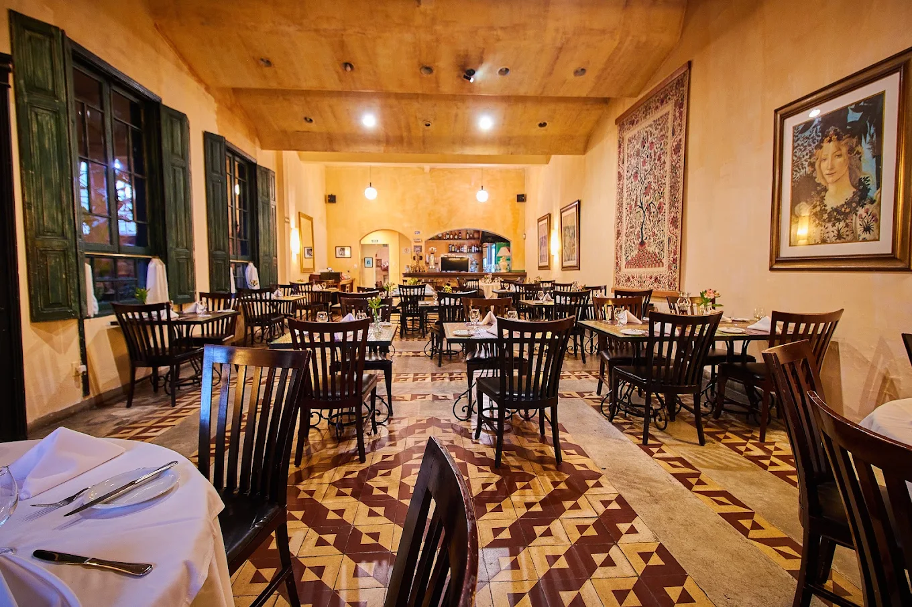
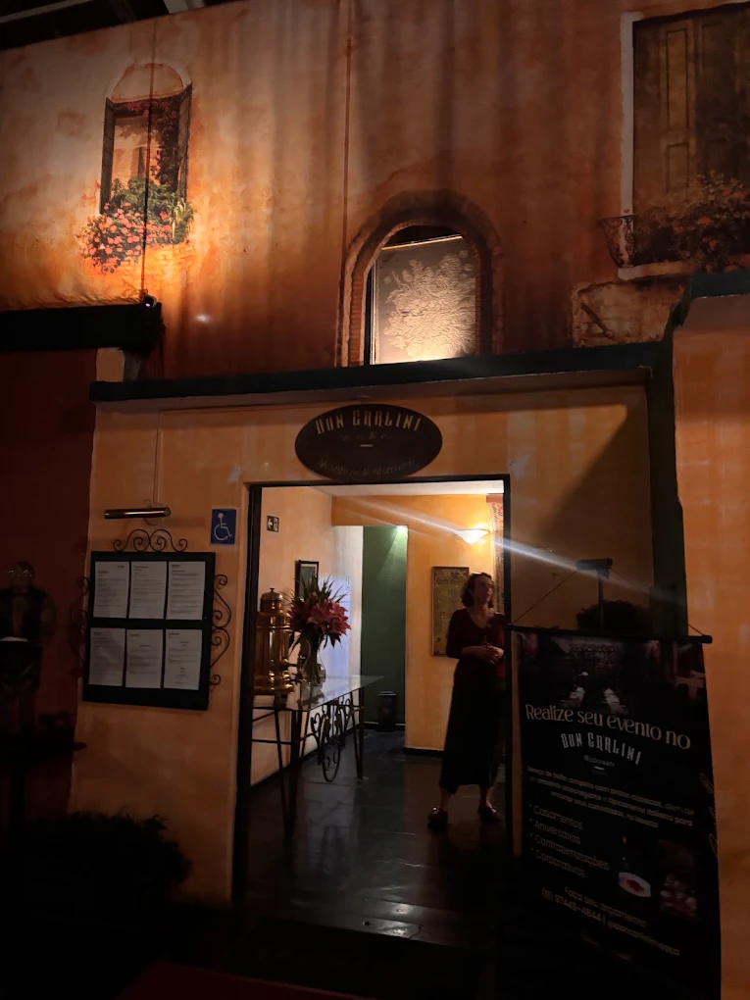
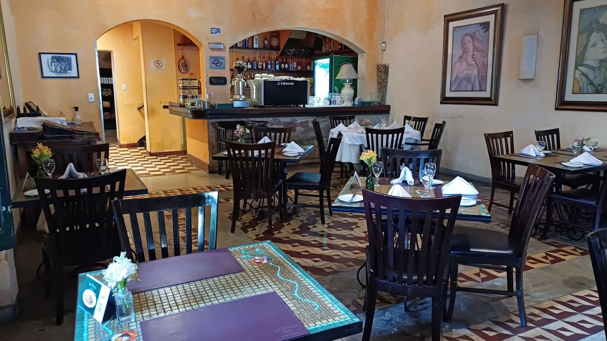
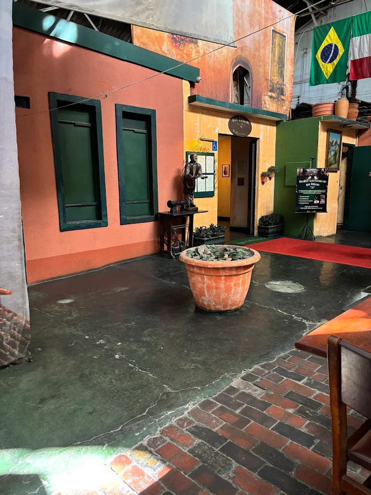
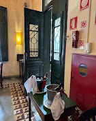
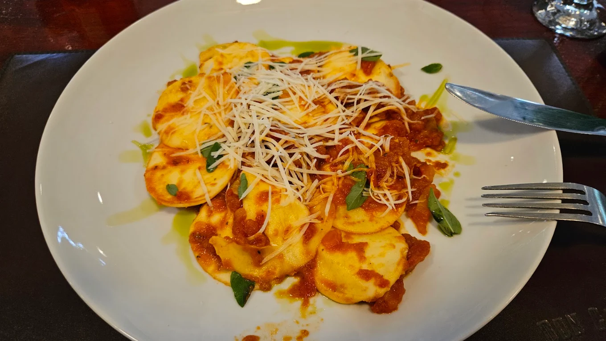
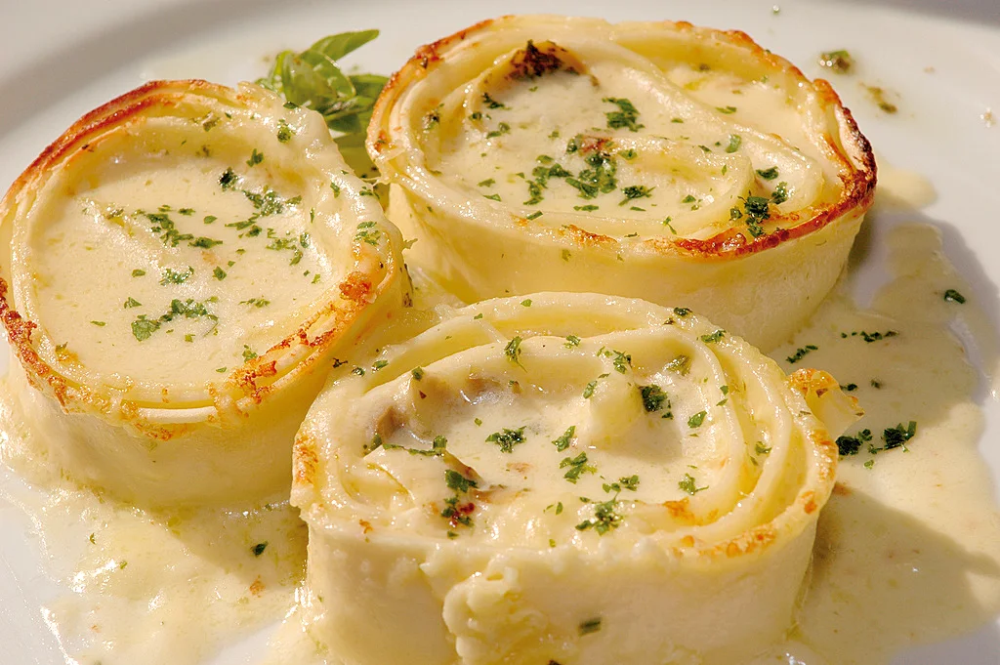
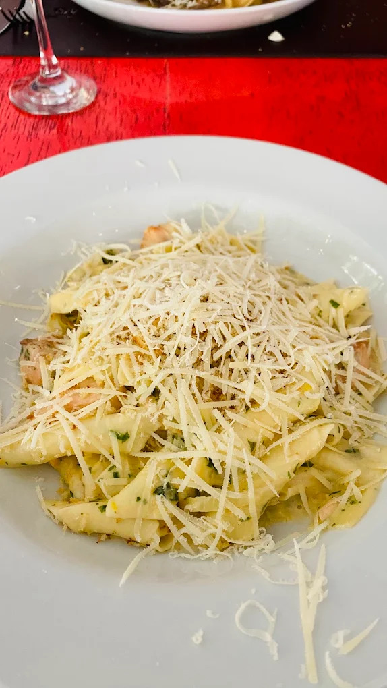

Nossa Galeria
Conheça o ambiente e os sabores do Don Carlini.
Explore as imagens e os vídeos do nosso restaurante, conheça nossos ambientes e descubra um pouco da experiência gastronômica que oferecemos.
Ambiente





Conheça nosso ambiente em vídeo
Pratos


